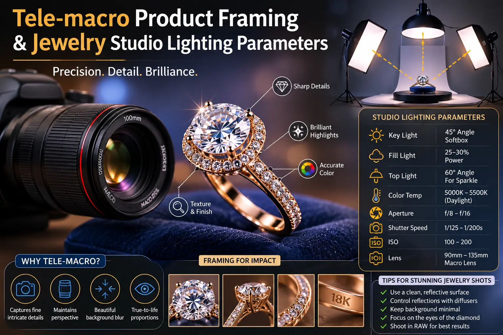
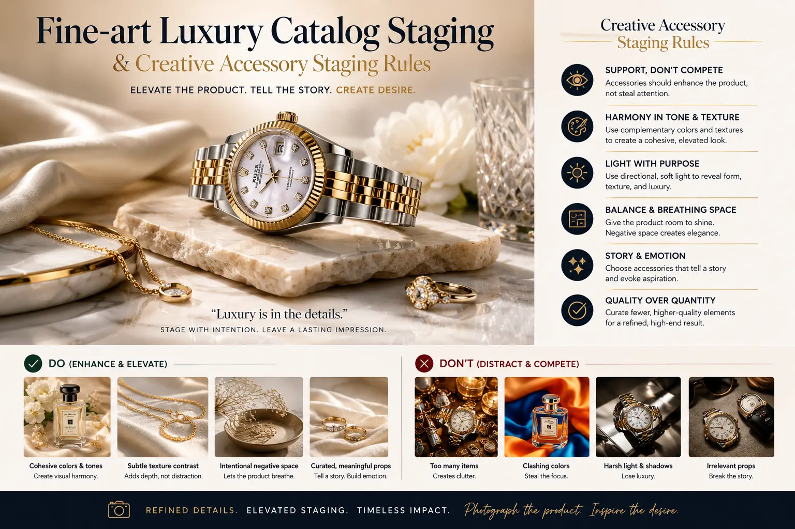

Pulling Intricate, Intimate Product Details Without Sacrificing Visual Perspective
The Macro Photography Paradox in Luxury Product Catalogs
Every luxury product brand faces the same visual communication challenge: customers need to see the intricate details that justify a premium price — the weave of a handwoven silk, the facets of a cut gemstone, the grain of a full-grain leather, the brushed texture of a titanium case back — but the conventional techniques for capturing those details often distort the product's shape, proportions, and visual identity in ways that undermine the very luxury the details are meant to convey.
Standard macro photography solves the magnification problem but introduces a perspective problem. Short-focal-length macro lenses require the camera to be positioned extremely close to the subject — often within centimetres. At these distances, perspective exaggeration is severe: edges curve, proportions distort, near elements appear oversized relative to far elements, and the product ceases to look like itself. The viewer sees the texture, but loses the shape. The detail is captured, but the product identity is compromised.
This is the problem that Tele-Macro Product Framing solves — a photographic discipline that uses telephoto-range macro lenses to capture extreme close-up detail from a greater working distance, preserving natural perspective, accurate proportions, and truthful product geometry while still revealing the intimate material details that communicate craftsmanship, quality, and luxury. It is a foundational technique of professional Website & Catalog Visual Production for brands that sell on visual detail.
Understanding Perspective Compression and Working Distance
The technical foundation of tele-macro photography is the relationship between focal length, working distance, and perspective rendering. These principles are essential for building High-resolution macro photography setups that capture detail without distortion:
- Longer focal lengths compress perspective. A 150mm or 200mm macro lens renders objects with flattened, natural-looking proportions — the front and back of the product appear at their true relative sizes, edges remain straight, and cylindrical or curved objects maintain their accurate geometry. This compression effect is the fundamental advantage of tele-macro over standard macro.
- Greater working distance reduces distortion. By positioning the camera further from the subject while maintaining the same magnification, tele-macro lenses eliminate the extreme close-proximity distortion that short macro lenses produce. A 100mm macro lens at 1:1 magnification focuses at approximately 30cm — a 200mm macro at 1:1 focuses at approximately 50cm. That additional 20cm of working distance dramatically reduces perspective distortion.
- Background compression creates visual separation. The compressed perspective of telephoto lenses narrows the angular field of view, naturally separating the subject from the background and creating the clean, uncluttered compositions that characterise luxury product photography. This is the optical foundation of eliminating product edge distortion while simultaneously producing the shallow depth-of-field bokeh that connotes premium visual quality.
- Reduced camera proximity minimises lighting interference. With the camera positioned further from the subject, there is more physical space between the lens and the product for positioning lights, reflectors, and diffusers — a critical practical advantage for jewelry studio lighting parameters that require precise, multi-directional light control around small, reflective objects.
Distortion-Free Details
Eliminating product edge distortion through tele-macro optics ensures products appear with accurate proportions, straight edges, and truthful geometry — even at extreme magnification levels.
Precision Lighting Control
Calibrating jewelry studio lighting parameters — diffused overhead key, focused accent for gemstone fire, reflector fill, and tent modifiers for metal control — reveals material brilliance without specular burn-out.
Luxury Catalog Standards
Fine-Art Luxury Catalog Staging combines tele-macro detail capture with intentional minimalist composition, creating product imagery that communicates exclusivity, craftsmanship, and premium value.
Premium Display Assets
Producing premium retail display assets — high-resolution macro images for website hero banners, in-store displays, and print catalogs — requires the dimensional accuracy that only tele-macro perspective provides.

The Lighting Architecture for Macro Product Photography
At macro magnification, lighting is not merely important — it is the primary determinant of whether the final image communicates quality or exposes flaws. Every surface imperfection, dust particle, and fingerprint that is invisible to the naked eye becomes visible and visually dominant at macro scales. Mastering jewelry studio lighting parameters and material-specific lighting setups is essential:
- Diffused overhead key light for even base illumination. Position a large softbox or scrim directly above the subject at a 45-degree forward angle. This creates soft, even illumination across the product surface, minimising harsh shadows and reducing specular highlights on reflective materials. The size of the light source should be at least 3x the size of the subject to maintain softness at macro distances.
- Focused accent light for texture and detail revelation. Add a small, focused light source — a gridded strobe or a fiber-optic light — positioned at a steep side angle to skim across surface textures. This grazing light reveals material characteristics that flat, frontal lighting obscures: fabric weave, leather grain, metal brushing, gemstone facets.
- Reflector fill for shadow control. Position white or silver reflector cards opposite the accent light and below the subject to bounce light into shadow areas. At macro scales, shadows can be extremely dense and detail-obscuring — reflector fill preserves shadow detail while maintaining the three-dimensional modelling that accent light creates.
- Dark-field techniques for highly reflective products. For polished jewelry, watches, and metallic accessories, use dark-field lighting — surrounding the product with dark surfaces that reflect as clean, dark tones on the product surface, with controlled bright reflections only where intended. This technique eliminates the "everything reflects" problem that makes polished metal products one of the most technically challenging subjects in product photography.
Staging and Composition for Luxury Catalogs
The staging and compositional framework for Fine-Art Luxury Catalog Staging follows principles that are distinct from standard e-commerce product photography. While e-commerce prioritises product isolation on white backgrounds, luxury catalog imagery tells a story about the product's world, materiality, and aspirational context:
Material Palette Coherence
- Select surfaces and props that share the product's material vocabulary — natural stone with metal products, linen with leather goods, velvet with fine jewelry.
- Maintain a consistent colour temperature across all staging elements — mix warm and cool materials deliberately, not accidentally.
- Following creative accessory staging rules means every prop serves a compositional purpose: creating depth, adding textural contrast, or directing the eye to the hero product.
- Limit the total number of staging elements to three maximum — hero product, primary surface, and one accent prop.
Compositional Architecture
- Position the hero product at the primary focal intersection — the point where the viewer's eye naturally settles first in the frame.
- Use negative space aggressively — luxury is communicated through absence as much as presence. Empty space around a product connotes exclusivity and breathing room.
- Create depth layers: a foreground element (slightly out of focus), the hero product (tack-sharp), and a background element (softly blurred) — producing a three-dimensional sense of space.
- Maintain consistent camera height and angle across a catalog series to create visual cohesion when images are displayed together.
Post-Production Standards
- Apply focus stacking for maximum sharpness across the product while maintaining soft, natural bokeh in the background — particularly critical for flat products like jewelry and watches.
- Remove dust, fingerprints, and surface imperfections through retouching — at macro scale, even microscopic particles are visually significant.
- Colour grade all images in the catalog to a consistent tonal profile — ensuring visual unity when images appear together on a website or in print.
- Export at the highest resolution supported by the delivery medium — maintaining the detail quality that tele-macro capture provides through the entire production pipeline.
Finding the Right Studio Partner
Tele-macro product photography requires specialised equipment — telephoto macro lenses, precision focusing rails, micro-adjustment lighting rigs, and focus-stacking software — that most general-purpose photography studios do not maintain. When searching for the best catalog studio near me, evaluate the studio's macro-specific capabilities: do they own dedicated tele-macro lenses? Can they demonstrate focus-stacking workflows? Do they have dark-field and tent-lighting setups for reflective materials? Can they show a portfolio of macro-scale jewelry, watch, or textile detail photography that maintains natural perspective?
The right studio partner understands that Website & Catalog Visual Production at the luxury level is not about owning the most expensive camera — it is about mastering the specific optical, lighting, and staging disciplines that produce images where intimate detail and accurate perspective coexist in every frame.

Conclusion
Capturing intricate product details without sacrificing visual perspective is the defining technical challenge of luxury product photography — and Tele-Macro Product Framing is the optical solution. By using telephoto-range macro lenses, brands can reveal the material details that communicate quality and craftsmanship while maintaining the accurate proportions, straight edges, and natural geometry that preserve product identity.
Combined with precision jewelry studio lighting parameters, disciplined Fine-Art Luxury Catalog Staging, and rigorous creative accessory staging rules, tele-macro photography produces premium retail display assets and High-resolution macro photography setups that serve every channel — from website hero banners and social media close-ups to printed catalogs and in-store display graphics.
At The PhD Ads, we specialise in Website & Catalog Visual Production for luxury and premium brands — building High-resolution macro photography setups with tele-macro optics, precision lighting, and fine-art staging that reveal every detail while preserving every proportion.
Key Topics
Reveal Every Detail Without Losing Perspective
At The PhD Ads, we produce tele-macro product photography for luxury brands — capturing intricate material details with natural perspective, precision lighting, and fine-art catalog staging.
Email: team@e2o.in